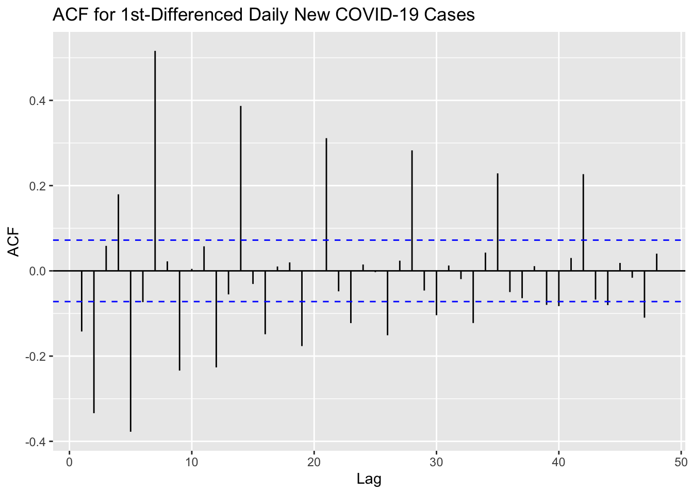
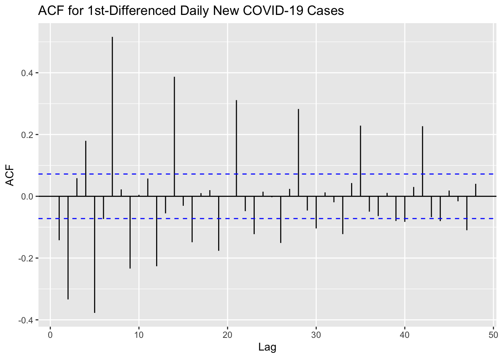

Code
# Plot ACF
ggAcf(new_cases_ts_diff, 48, main="ACF for 1st-Differenced Daily New COVID-19 Cases")
In this section, I start trying to fit and forecast Daily New Confirmed COVID-19 Cases and Deaths by using some basic time-series models, including the ARMA (Autoregressive Moving Average) model or its variants, ARIMA (Autoregressive Integrated Moving Average) and SARIMA (Seasonal Autoregressive Integrated Moving Average).
# Plot ACF
ggAcf(new_cases_ts_diff, 48, main="ACF for 1st-Differenced Daily New COVID-19 Cases")
# Plot PACF
ggPacf(new_cases_ts_diff, 48, main="PACF for 1st-Differenced Daily New COVID-19 Cases")adf.test(new_cases_ts_diff)
Augmented Dickey-Fuller Test
data: new_cases_ts_diff
Dickey-Fuller = -2.3693, Lag order = 9, p-value = 0.422
alternative hypothesis: stationaryIt seems that the time series is not stationary, and it needs further differencing.
# Plot ACF
ggAcf(new_cases_ts_diff2, 48, main="ACF for 2nd-Differenced Daily New COVID-19 Cases")# Plot PACF
ggPacf(new_cases_ts_diff2, 48, main="PACF for 2nd-Differenced Daily New COVID-19 Cases")adf.test(new_cases_ts_diff2)
Augmented Dickey-Fuller Test
data: new_cases_ts_diff2
Dickey-Fuller = -15.829, Lag order = 9, p-value = 0.01
alternative hypothesis: stationaryACF and PACF Plot prove that the time series has basically achieved stationarity, and ADF Test further proves this conclusion.
d=1
i=1
temp= data.frame()
ls=matrix(rep(NA,6*24),nrow=24) # roughly nrow = 3x4x2
for (p in 1:4) # p=0,1,2,3
{
for(q in 1:3) # q=0,1,2
{
for(d in 1:2) # d=1,2
{
if(p-1+d+q-1<=8)
{
model<- Arima(new_cases_ts,order=c(p-1,d,q-1))
ls[i,]= c(p-1,d,q-1,model$aic,model$bic,model$aicc)
i=i+1
#print(i)
}
}
}
}
temp= as.data.frame(ls)
names(temp)= c("p","d","q","AIC","BIC","AICc")
#temp
temp <- temp[order(temp$BIC, decreasing = FALSE),]
knitr::kable(temp)| p | d | q | AIC | BIC | AICc | |
|---|---|---|---|---|---|---|
| 18 | 2 | 2 | 2 | 17421.60 | 17444.62 | 17421.68 |
| 24 | 3 | 2 | 2 | 17440.96 | 17468.58 | 17441.07 |
| 16 | 2 | 2 | 1 | 17453.17 | 17471.58 | 17453.22 |
| 22 | 3 | 2 | 1 | 17451.17 | 17474.19 | 17451.25 |
| 13 | 2 | 1 | 0 | 17467.52 | 17481.33 | 17467.55 |
| 21 | 3 | 1 | 1 | 17459.14 | 17482.16 | 17459.22 |
| 15 | 2 | 1 | 1 | 17464.67 | 17483.09 | 17464.72 |
| 19 | 3 | 1 | 0 | 17466.10 | 17484.52 | 17466.15 |
| 17 | 2 | 1 | 2 | 17461.68 | 17484.71 | 17461.77 |
| 23 | 3 | 1 | 2 | 17460.71 | 17488.34 | 17460.82 |
| 5 | 0 | 1 | 2 | 17474.86 | 17488.68 | 17474.90 |
| 11 | 1 | 1 | 2 | 17476.04 | 17494.46 | 17476.10 |
| 12 | 1 | 2 | 2 | 17477.70 | 17496.11 | 17477.75 |
| 9 | 1 | 1 | 1 | 17514.13 | 17527.95 | 17514.17 |
| 6 | 0 | 2 | 2 | 17543.30 | 17557.12 | 17543.34 |
| 3 | 0 | 1 | 1 | 17557.33 | 17566.54 | 17557.34 |
| 10 | 1 | 2 | 1 | 17575.35 | 17589.16 | 17575.38 |
| 4 | 0 | 2 | 1 | 17588.18 | 17597.39 | 17588.20 |
| 7 | 1 | 1 | 0 | 17589.60 | 17598.81 | 17589.62 |
| 1 | 0 | 1 | 0 | 17602.64 | 17607.24 | 17602.64 |
| 20 | 3 | 2 | 0 | 17643.83 | 17662.25 | 17643.89 |
| 14 | 2 | 2 | 0 | 17795.43 | 17809.24 | 17795.46 |
| 8 | 1 | 2 | 0 | 18041.31 | 18050.52 | 18041.33 |
| 2 | 0 | 2 | 0 | 18188.81 | 18193.42 | 18188.82 |
# Extract lowest AIC
temp[which.min(temp$AIC),] p d q AIC BIC AICc
18 2 2 2 17421.6 17444.62 17421.68# Extract lowest BIC
temp[which.min(temp$BIC),] p d q AIC BIC AICc
18 2 2 2 17421.6 17444.62 17421.68# Extract lowest AICc
temp[which.min(temp$AICc),] p d q AIC BIC AICc
18 2 2 2 17421.6 17444.62 17421.68Based on the results, the ARIMA(2,2,2) is the best model.
auto.arima(new_cases_ts)Series: new_cases_ts
ARIMA(3,1,4)
Coefficients:
ar1 ar2 ar3 ma1 ma2 ma3 ma4
0.5066 -0.4138 0.6162 -0.8199 0.0390 -0.6119 0.6642
s.e. 0.0474 0.0725 0.0731 0.0529 0.0966 0.0742 0.0341
sigma^2 = 8.47e+08: log likelihood = -8642.52
AIC=17301.04 AICc=17301.24 BIC=17337.88The auto.arima function in R suggests an ARIMA(3,1,4) model as the best fit for the data. Since there are different models to choose from, it is important to perform model diagnostics to determine the best model for the data.
model_output1 <- capture.output(sarima(new_cases_ts,2,2,2))cat(model_output1[45:76], model_output1[length(model_output1)], sep = "\n") $fit
Call:
arima(x = xdata, order = c(p, d, q), seasonal = list(order = c(P, D, Q), period = S),
include.mean = !no.constant, transform.pars = trans, fixed = fixed, optim.control = list(trace = trc,
REPORT = 1, reltol = tol))
Coefficients:
ar1 ar2 ma1 ma2
0.4045 -0.3582 -1.7228 0.7543
s.e. 0.0475 0.0433 0.0377 0.0385
sigma^2 estimated as 1.025e+09: log likelihood = -8705.8, aic = 17421.6
$degrees_of_freedom
[1] 734
$ttable
Estimate SE t.value p.value
ar1 0.4045 0.0475 8.5196 0
ar2 -0.3582 0.0433 -8.2627 0
ma1 -1.7228 0.0377 -45.7187 0
ma2 0.7543 0.0385 19.5834 0
$AIC
[1] 23.6065
$AICc
[1] 23.60657
$BIC
[1] 23.63769model_output2 <- capture.output(sarima(new_cases_ts,3,1,4))cat(model_output2[47:83], model_output2[length(model_output2)], sep = "\n") $fit
Call:
arima(x = xdata, order = c(p, d, q), seasonal = list(order = c(P, D, Q), period = S),
xreg = constant, transform.pars = trans, fixed = fixed, optim.control = list(trace = trc,
REPORT = 1, reltol = tol))
Coefficients:
ar1 ar2 ar3 ma1 ma2 ma3 ma4 constant
0.5033 -0.4148 0.6132 -0.8180 0.0383 -0.6115 0.6630 1005.1702
s.e. 0.0479 0.0726 0.0738 0.0532 0.0970 0.0746 0.0343 963.9153
sigma^2 estimated as 837775001: log likelihood = -8641.99, aic = 17301.97
$degrees_of_freedom
[1] 731
$ttable
Estimate SE t.value p.value
ar1 0.5033 0.0479 10.5180 0.0000
ar2 -0.4148 0.0726 -5.7122 0.0000
ar3 0.6132 0.0738 8.3139 0.0000
ma1 -0.8180 0.0532 -15.3705 0.0000
ma2 0.0383 0.0970 0.3952 0.6928
ma3 -0.6115 0.0746 -8.1988 0.0000
ma4 0.6630 0.0343 19.3297 0.0000
constant 1005.1702 963.9153 1.0428 0.2974
$AIC
[1] 23.41268
$AICc
[1] 23.41295
$BIC
[1] 23.46877Both models show residuals that seem to have no trend, which is good. Both models’ ACF plots with most spikes within the confidence bounds, suggesting the residuals do not exhibit autocorrelation. The plots indicate that the residuals from both models do not perfectly follow a normal distribution, especially in the tails. However, this deviation is quite common in practice. The p-values for both models seem to be above the 0.05 threshold, suggesting that the residuals are white noise.
Considering all the diagnostics, the ARIMA(3,1,4) model has slightly better AIC values, which might make it preferable.
The equation for the model:
\[\begin{equation} \Delta X_t = c + 0.5033 \Delta X_{t-1} - 0.4148 \Delta X_{t-2} + 0.6132 \Delta X_{t-3} - 0.8180 \varepsilon_{t-1} + 0.0383 \varepsilon_{t-2} - 0.6115 \varepsilon_{t-3} + 0.6630 \varepsilon_{t-4} + \varepsilon_t \end{equation}\]
sarima.for(new_cases_ts, 60, 3,1,4, main='Daily New Confirmed Cases in the US Prediction')$pred
Time Series:
Start = c(2022, 11)
End = c(2022, 70)
Frequency = 365
[1] 861596.4 927773.1 697486.0 721165.9 869485.4 793404.1 708409.3 788436.5
[9] 817618.4 747292.8 749164.3 797470.9 778184.9 749888.0 773566.6 785695.6
[17] 764927.0 764262.1 780279.5 776181.7 767367.5 774752.4 779912.6 774341.6
[25] 774225.4 779941.8 779750.8 777512.2 780269.7 782769.0 781810.2 782281.6
[33] 784749.0 785507.2 785454.3 786926.0 788453.4 788879.1 789662.0 791116.0
[41] 792083.8 792747.9 793871.9 795055.6 795892.1 796811.3 797952.6 798958.5
[49] 799854.8 800888.4 801953.4 802910.3 803883.6 804929.6 805938.8 806909.6
[57] 807920.8 808945.8 809937.3 810931.2
$se
Time Series:
Start = c(2022, 11)
End = c(2022, 70)
Frequency = 365
[1] 28944.34 35088.17 35357.12 35359.25 39868.32 44445.05 45634.42
[8] 48431.48 53955.29 57355.29 60035.77 64401.16 68786.37 71990.65
[15] 75521.64 79666.40 83257.17 86513.91 90114.71 93690.41 96898.34
[22] 100106.68 103423.68 106563.36 109555.03 112585.36 115575.96 118429.93
[29] 121238.94 124042.42 126768.39 129419.09 132047.45 134637.99 137163.50
[36] 139647.95 142105.55 144518.33 146886.01 149224.33 151531.07 153798.93
[43] 156034.71 158243.70 160421.80 162569.05 164690.50 166786.46 168855.26
[50] 170899.15 172920.30 174918.06 176892.75 178846.24 180779.10 182691.21
[57] 184583.53 186457.05 188311.96 190148.62The ARIMA(3,1,4) model seems to predict a trend of stable or slightly increasing cases in the immediate future. The actual data shows considerable variability, with what appears to be periodic spikes. It doesn’t appear that the model has captured these periodic spikes in the forecast, possibly because these fluctuations may not be predictable using past data alone or may require a more complex seasonal model.
fit1 <- Arima(new_cases_ts, order=c(3,1,4))
autoplot(new_cases_ts) +
autolayer(meanf(new_cases_ts, h=60), series="Mean", PI=FALSE) +
autolayer(naive(new_cases_ts, h=60), series="Naïve", PI=FALSE) +
autolayer(snaive(new_cases_ts, h=60), series="SNaïve", PI=FALSE) +
autolayer(rwf(new_cases_ts, h=60, drift=TRUE), series="Drift", PI=FALSE) +
autolayer(forecast(fit1,60), series="ARIMA(3,1,4)", PI=FALSE) +
ggtitle("Forecasting ARIMA(3,1,4) and Benchmark Methods")From the graph, only the predictions of the SNaïve baseline method appear to be more reasonable compared to the predictions of the ARIMA(3,1,4) model. Forecasts generated from the SNaïve benchmark have the greatest fluctuations or seasonality in the larger range of new cases. However, these indicators paint a volatile downward trend in the number of new cases. The ARIMA(3,1,4) model predicts that the number of new cases will first decrease and then stabilize. For shorter forecast horizons, SNaïve models may perform better than ARIMA models, while for longer forecast horizons, ARIMA models may perform better. This is because the SNaïve model assumes that the future values of the time series will be the same as the past values at the same time of year, which may be a reasonable assumption for shorter forecast horizons, but not for longer forecast horizons.
# Plot ACF
ggAcf(new_deaths_ts_diff, lag = 48, main="ACF for 1st-Differenced Daily New COVID-19 Deaths")# Plot PACF
ggPacf(new_deaths_ts_diff, lag = 48, main="PACF for 1st-Differenced Daily New COVID-19 Deaths")adf.test(new_deaths_ts_diff)
Augmented Dickey-Fuller Test
data: new_deaths_ts_diff
Dickey-Fuller = -9.1862, Lag order = 9, p-value = 0.01
alternative hypothesis: stationaryACF and PACF Plot prove that the time series is almost stationary, and ADF Test further proves this conclusion.
d=1
i=1
temp= data.frame()
ls=matrix(rep(NA,6*32),nrow=32) # roughly nrow = 5x6x1
for (p in 1:7) # p=0,1,2,3,4,5,6
{
for(q in 1:6) # q=0,1,2,3,4,5
{
for(d in 1) # d=1
{
if(p-1+d+q-1<=8)
{
model<- Arima(new_deaths_ts,order=c(p-1,d,q-1))
ls[i,]= c(p-1,d,q-1,model$aic,model$bic,model$aicc)
i=i+1
#print(i)
}
}
}
}
temp= as.data.frame(ls)
names(temp)= c("p","d","q","AIC","BIC","AICc")
#temp
temp <- temp[order(temp$BIC, decreasing = FALSE),]
knitr::kable(temp)| p | d | q | AIC | BIC | AICc | |
|---|---|---|---|---|---|---|
| 30 | 5 | 1 | 2 | 10582.26 | 10619.11 | 10582.46 |
| 27 | 4 | 1 | 3 | 10593.72 | 10630.56 | 10593.92 |
| 32 | 6 | 1 | 1 | 10605.04 | 10641.88 | 10605.24 |
| 31 | 6 | 1 | 0 | 10610.07 | 10642.31 | 10610.23 |
| 26 | 4 | 1 | 2 | 10618.72 | 10650.95 | 10618.87 |
| 23 | 3 | 1 | 4 | 10627.88 | 10664.72 | 10628.07 |
| 17 | 2 | 1 | 4 | 10634.99 | 10667.23 | 10635.14 |
| 22 | 3 | 1 | 3 | 10637.71 | 10669.95 | 10637.87 |
| 29 | 5 | 1 | 1 | 10642.17 | 10674.41 | 10642.33 |
| 28 | 5 | 1 | 0 | 10679.09 | 10706.72 | 10679.20 |
| 21 | 3 | 1 | 2 | 10733.05 | 10760.68 | 10733.17 |
| 15 | 2 | 1 | 2 | 10759.49 | 10782.52 | 10759.57 |
| 25 | 4 | 1 | 1 | 10778.09 | 10805.72 | 10778.20 |
| 18 | 2 | 1 | 5 | 10786.03 | 10822.87 | 10786.22 |
| 11 | 1 | 1 | 4 | 10816.27 | 10843.90 | 10816.38 |
| 12 | 1 | 1 | 5 | 10817.06 | 10849.30 | 10817.21 |
| 6 | 0 | 1 | 5 | 10827.60 | 10855.24 | 10827.72 |
| 20 | 3 | 1 | 1 | 10842.16 | 10865.19 | 10842.24 |
| 5 | 0 | 1 | 4 | 10860.54 | 10883.57 | 10860.62 |
| 14 | 2 | 1 | 1 | 10875.01 | 10893.43 | 10875.06 |
| 10 | 1 | 1 | 3 | 10900.19 | 10923.22 | 10900.28 |
| 4 | 0 | 1 | 3 | 10905.84 | 10924.26 | 10905.90 |
| 16 | 2 | 1 | 3 | 10899.01 | 10926.64 | 10899.13 |
| 9 | 1 | 1 | 2 | 10913.98 | 10932.40 | 10914.03 |
| 3 | 0 | 1 | 2 | 10921.08 | 10934.89 | 10921.11 |
| 24 | 4 | 1 | 0 | 10932.28 | 10955.30 | 10932.36 |
| 8 | 1 | 1 | 1 | 10959.13 | 10972.95 | 10959.17 |
| 19 | 3 | 1 | 0 | 11002.82 | 11021.24 | 11002.87 |
| 13 | 2 | 1 | 0 | 11042.55 | 11056.37 | 11042.59 |
| 1 | 0 | 1 | 0 | 11085.49 | 11090.10 | 11085.50 |
| 2 | 0 | 1 | 1 | 11086.60 | 11095.81 | 11086.61 |
| 7 | 1 | 1 | 0 | 11087.05 | 11096.27 | 11087.07 |
# Extract lowest AIC
temp[which.min(temp$AIC),] p d q AIC BIC AICc
30 5 1 2 10582.26 10619.11 10582.46# Extract lowest BIC
temp[which.min(temp$BIC),] p d q AIC BIC AICc
30 5 1 2 10582.26 10619.11 10582.46# Extract lowest AICc
temp[which.min(temp$AICc),] p d q AIC BIC AICc
30 5 1 2 10582.26 10619.11 10582.46Based on the results, the ARIMA(5,1,2) is the best model.
auto.arima(new_deaths_ts)Series: new_deaths_ts
ARIMA(3,1,2)
Coefficients:
ar1 ar2 ar3 ma1 ma2
0.9251 -0.5823 -0.3006 -1.3064 0.8341
s.e. 0.0393 0.0471 0.0377 0.0194 0.0435
sigma^2 = 117294: log likelihood = -5360.53
AIC=10733.05 AICc=10733.17 BIC=10760.68The auto.arima function in R suggests an ARIMA(3,1,2) model as the best fit for the data. Since there are different models to choose from, it is important to perform model diagnostics to determine the best model for the data.
model_output3 <- capture.output(sarima(new_deaths_ts,5,1,2))cat(model_output3[51:86], model_output3[length(model_output3)], sep = "\n") $fit
Call:
arima(x = xdata, order = c(p, d, q), seasonal = list(order = c(P, D, Q), period = S),
xreg = constant, transform.pars = trans, fixed = fixed, optim.control = list(trace = trc,
REPORT = 1, reltol = tol))
Coefficients:
ar1 ar2 ar3 ar4 ar5 ma1 ma2 constant
0.5145 -0.7522 -0.1719 -0.3084 -0.2779 -1.0594 0.7524 2.4559
s.e. 0.0598 0.0425 0.0506 0.0396 0.0454 0.0501 0.0510 3.9293
sigma^2 estimated as 94281: log likelihood = -5282.94, aic = 10583.87
$degrees_of_freedom
[1] 731
$ttable
Estimate SE t.value p.value
ar1 0.5145 0.0598 8.6098 0.0000
ar2 -0.7522 0.0425 -17.6905 0.0000
ar3 -0.1719 0.0506 -3.3979 0.0007
ar4 -0.3084 0.0396 -7.7939 0.0000
ar5 -0.2779 0.0454 -6.1255 0.0000
ma1 -1.0594 0.0501 -21.1268 0.0000
ma2 0.7524 0.0510 14.7517 0.0000
constant 2.4559 3.9293 0.6250 0.5321
$AIC
[1] 14.32188
$AICc
[1] 14.32215
$BIC
[1] 14.37797model_output4 <- capture.output(sarima(new_deaths_ts,3,1,2))cat(model_output4[62:95], model_output4[length(model_output4)], sep = "\n") $fit
Call:
arima(x = xdata, order = c(p, d, q), seasonal = list(order = c(P, D, Q), period = S),
xreg = constant, transform.pars = trans, fixed = fixed, optim.control = list(trace = trc,
REPORT = 1, reltol = tol))
Coefficients:
ar1 ar2 ar3 ma1 ma2 constant
0.9250 -0.5821 -0.3006 -1.3064 0.8338 2.1160
s.e. 0.0393 0.0471 0.0377 0.0194 0.0440 6.9182
sigma^2 estimated as 116486: log likelihood = -5360.48, aic = 10734.96
$degrees_of_freedom
[1] 733
$ttable
Estimate SE t.value p.value
ar1 0.9250 0.0393 23.5524 0.0000
ar2 -0.5821 0.0471 -12.3571 0.0000
ar3 -0.3006 0.0377 -7.9825 0.0000
ma1 -1.3064 0.0194 -67.4476 0.0000
ma2 0.8338 0.0440 18.9587 0.0000
constant 2.1160 6.9182 0.3059 0.7598
$AIC
[1] 14.52633
$AICc
[1] 14.52649
$BIC
[1] 14.56995Both models seem to produce residuals that do not show any obvious patterns or trends. The ACF plots for both models show that most of the autocorrelations for the residuals are within the confidence bounds, indicating that there is no significant autocorrelation left in the residuals. The Q-Q plots for both models indicate that the residuals are not perfectly normally distributed, as the points in the tails do not lie on the line. The p-value plots for both models show that the p-values are generally above the significance level (e.g., 0.05), suggesting that there is no significant autocorrelation in the residuals at various lags. The ARIMA(5,1,2) model has slightly lower values of AICc and BIC compared to the ARIMA(3,1,2), suggesting it may be a better model in terms of information criteria.
Based on this comparison, the ARIMA(5,1,2) model has a slight edge due to its lower information criteria values, indicating a better fit.
The equation for the model:
\[\begin{equation} \Delta X_t = 2.4559 + 0.5145 \Delta X_{t-1} - 0.7522 \Delta X_{t-2} - 0.1719 \Delta X_{t-3} - 0.3084 \Delta X_{t-4} - 0.2779 \Delta X_{t-5} - 1.0594 \varepsilon_{t-1} + 0.7524 \varepsilon_{t-2} + \varepsilon_t \end{equation}\]
sarima.for(new_deaths_ts, 60, 5,1,2, main='Daily New Confirmed Deaths in the US Prediction')$pred
Time Series:
Start = c(2022, 11)
End = c(2022, 70)
Frequency = 365
[1] 1817.378 2533.310 2482.004 2225.955 1717.000 1129.880 1076.396 1676.108
[9] 2358.844 2595.624 2285.371 1665.098 1166.319 1171.729 1691.089 2322.385
[17] 2586.706 2300.419 1689.015 1210.230 1220.939 1711.417 2311.035 2571.239
[25] 2304.436 1719.035 1257.475 1264.212 1730.356 2304.046 2557.359 2307.133
[33] 1748.510 1304.202 1306.153 1749.059 2298.561 2544.969 2310.062 1777.167
[41] 1349.679 1347.150 1767.871 2294.246 2533.875 2313.396 1805.086 1393.857
[49] 1387.239 1786.834 2291.029 2523.994 2317.143 1832.323 1436.784 1426.448
[57] 1805.938 2288.859 2515.272 2321.295
$se
Time Series:
Start = c(2022, 11)
End = c(2022, 70)
Frequency = 365
[1] 307.0520 337.3582 341.6075 351.4300 364.3356 369.6587 383.7552 416.5040
[9] 444.4938 457.2325 463.2090 467.7570 474.4112 488.2983 510.4862 531.5371
[17] 543.7563 549.1946 552.7645 558.5675 570.7212 589.1581 606.8158 617.6566
[25] 622.7088 626.0103 631.2296 641.9146 657.9523 673.4421 683.2216 687.9733
[33] 691.1358 695.9627 705.5463 719.8128 733.7062 742.6824 747.2089 750.2808
[41] 754.8203 763.5571 776.4456 789.0872 797.4299 801.7837 804.7930 809.1103
[49] 817.1723 828.9508 840.5750 848.4005 852.6175 855.5824 859.7220 867.2304
[57] 878.0912 888.8675 896.2598 900.3652The forecast shows a volatile trend with a lot of ups and downs, which suggests that the model expects the number of deaths to continue fluctuating rather than settling into a steady trend. The forecast seems to suggest a repeating pattern or cyclical behavior in the near future. This could imply that the model has detected some seasonal patterns in the historical data, or it may be a sign that the model is overfitting to It’s crucial to consider external factors that could affect the actual outcomes, such as new variants of the virus, changes in public health policy, vaccine distribution, and public behavior. These factors are not accounted for in the model but can significantly influence the actual number of deaths.
fit2 <- Arima(new_deaths_ts, order=c(5,1,2))
autoplot(new_deaths_ts) +
autolayer(meanf(new_deaths_ts, h=60), series="Mean", PI=FALSE) +
autolayer(naive(new_deaths_ts, h=60), series="Naïve", PI=FALSE) +
autolayer(snaive(new_deaths_ts, h=60), series="SNaïve", PI=FALSE) +
autolayer(rwf(new_deaths_ts, h=60, drift=TRUE), series="Drift", PI=FALSE) +
autolayer(forecast(fit2,60), series="ARIMA(5,1,2)", PI=FALSE) +
ggtitle("Forecasting ARIMA(5,1,2) and Benchmark Methods")
Similar to the previous analysis, only the predictions of the SNaïve benchmark method appear to be more reasonable compared to the predictions of the ARIMA(5,1,2) model. The ARIMA(5,1,2) model predicts that the number of new deaths will fluctuate within a certain range. And forecasts generated from the SNaïve benchmark show even stronger volatility or seasonality. Overall, these forecasts reveal a strong cyclicality in new deaths.
In the previous analysis, the ACF plots of daily new COVID-19 cases and deaths did not exhibit clear cyclical patterns. This suggests that using the SARIMA model may not be a suitable choice.